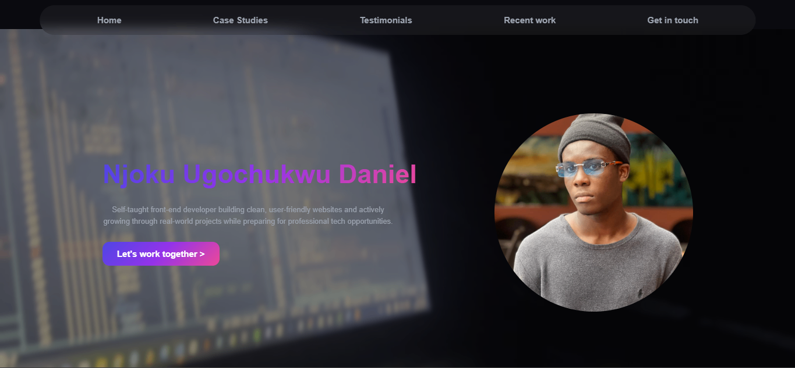
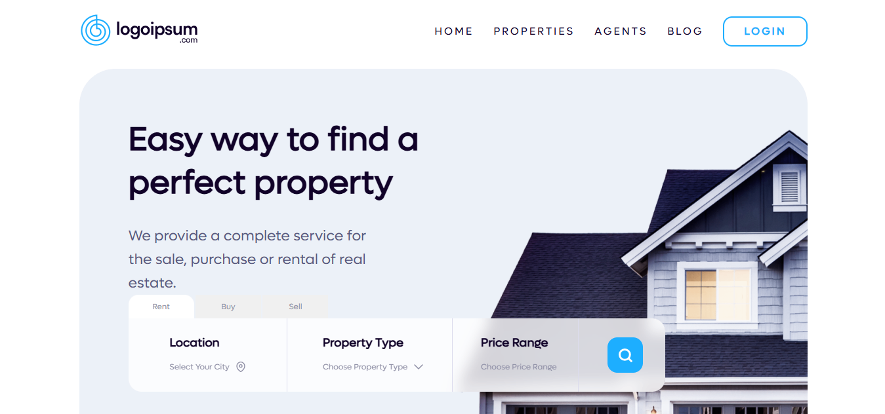
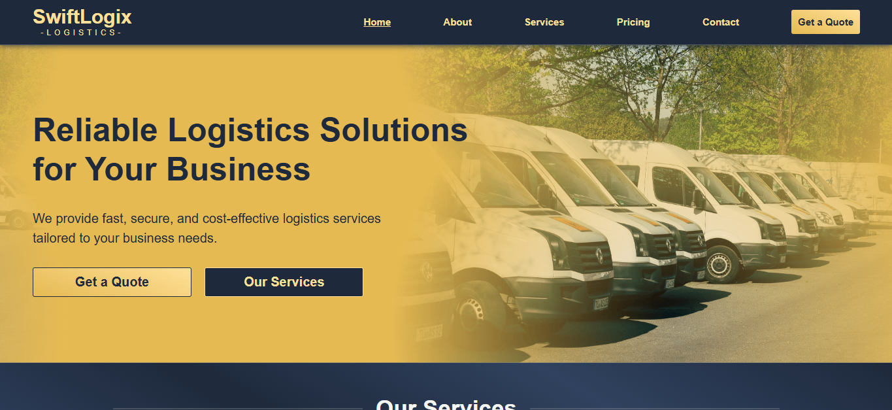
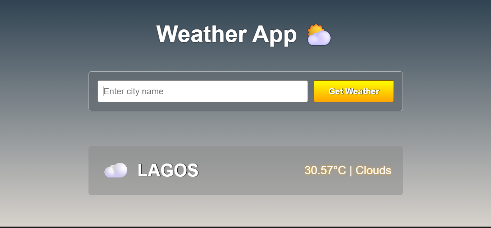
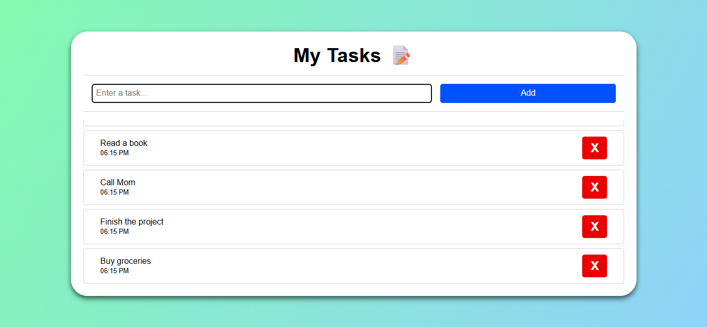

Njoku Ugochukwu Daniel
Self-taught front-end developer building clean, user-friendly websites and actively growing through real-world projects while preparing for professional tech opportunities.
Self-taught front-end developer building clean, user-friendly websites and actively growing through real-world projects while preparing for professional tech opportunities.
A selection of projects that reflect my learning journey, problem-solving approach, and growing experience in front-end development.
A responsive personal website built to showcase my skills, projects, and growth as a frontend developer. The project focuses on clean structure, proper spacing, and clarity, ensuring content is easy to read navigate. It also helped me improve my understanding of layout design, responsiveness, and maintaining consistency across different screen sizes.


A modern landing page created to practice layout structure, color harmony, and call-to-action placement. This project was created to strengthen my ability to translate simple design ideas into clean, functional user interfaces. Through this build, I improved my use of Flexbox, spacing, and visual hierarcy to guide user attention effectively.
A beginner-level web interface developed as part of my learning process in frontend development. the project focuses on semantic HTML, organized CSS, and readable layouts while preparing for future JavaScript integration. It helped reinforce core web fundamentals and improved my confidence in building structured, user-friendly interfaces.

Comments and feedback from peers, mentors, and collaborators who have observed my growth, work ethic, and learning progress. Words from people who have followed my learning journey and progress
Very consistent and dedicated to improving his skills. You can clearly see steady growth in the quality of his projects over time.
Shows strong curiosity and discipline when learning frontend concepts. He puts in the effort to understand fundamentals and apply them correctly.
Always focused on learning and improving. His progress is noticeable, especially in how structured and clean his work has become.
Open to feedback and willing to make improvements. He takes corrections seriously and uses them to build better results.
A selection of my recent projects showcasing practical applications of my front-end development skills. Each project demonstrates my focus on clean design, responsive layouts, and user-friendly interfaces

A clean, responsive weather dashboard that displays real-time weather data using the OpenWeatherMap API. Users can search for any city and view temperature, humidity, windspeed, and conditions with dynamic icons. This project strengthened my API integration skills and taught me how to handle asynchronous data gracefully.

A minimal task manager that lets user add, complete, and delete tasks with persistent local storage. The interface is designed for clarity and ease of use, featuring smooth animations and focus on user productivity. Building this helped me master DOM manipulation, state management, and responsive design.
If you're interested in working together or have a project in mind, feel free to send a message. I'm open to collaboration, feedback, and new opportunities.